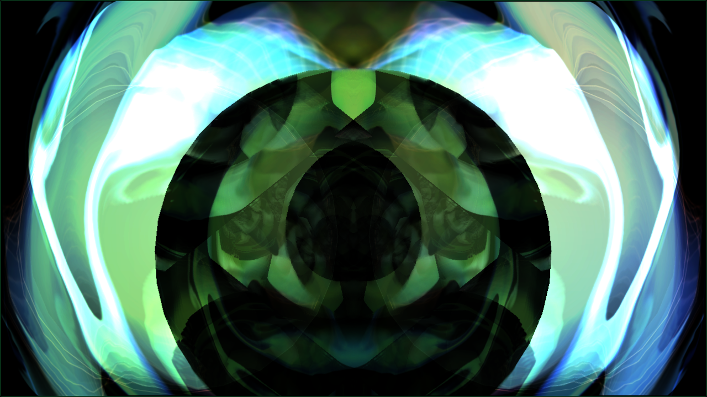
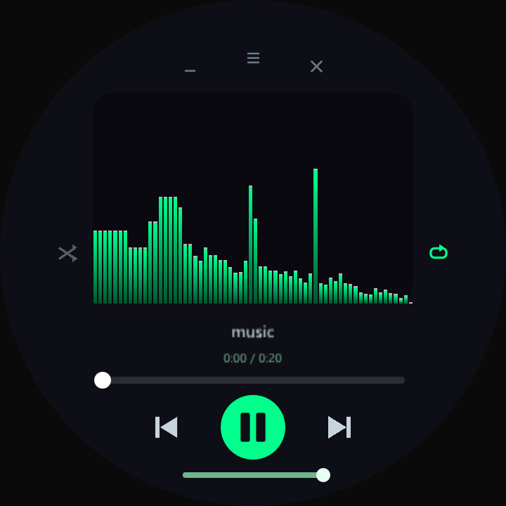
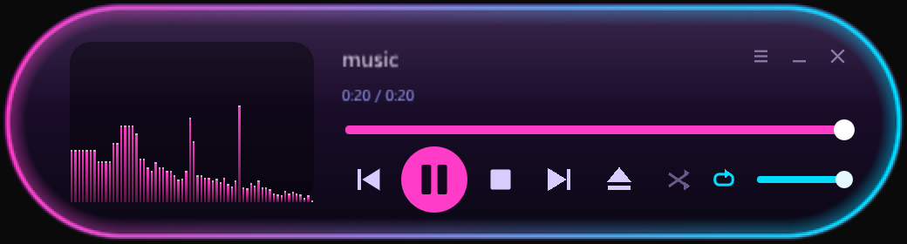
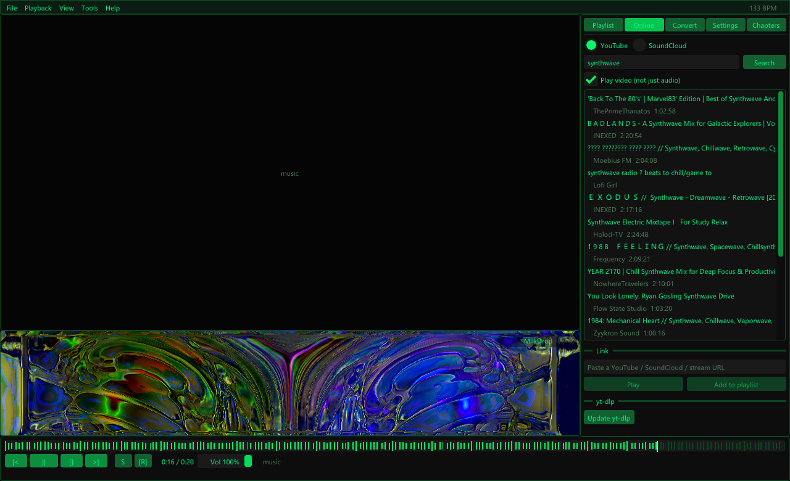
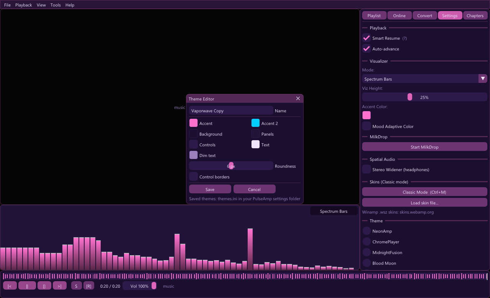

PulseAmp
A free media player for Windows and Linux with YouTube and SoundCloud, MilkDrop visualizations and real Winamp skins.
On Linux, get the AppImage: make it executable (chmod +x PulseAmp-x86_64.AppImage) and run it.
Needs a 2024-or-newer distro (e.g. Ubuntu 24.04, Fedora 40, Debian 13, Arch).
There's no ready-made download for your system yet, but you can build PulseAmp from source.

Everything a music player should do
Plays your files, and whatever you find online, with visuals that react to the music.
YouTube & SoundCloud
Search and play from the Online tab, paste a link, or drag one in from your browser. YouTube plays with video up to 1080p.
MilkDrop visualizations
Winamp's legendary visualizer through projectM, with nearly 10,000 presets. Switch presets with [ and ].
Winamp skins
Classic mode turns PulseAmp into a compact window in the shape of its skin. Load real Winamp .wsz skins, or design your own.
Themes
Eight colour themes, from Winamp green to a light classic look, plus a live theme editor to make and save your own.
Waveform, BPM & resume
Seek on the track's waveform, see the live BPM, and pick up every file where you left off.
Fullscreen & scaling
Double-click for fullscreen; the controls fade away. The interface scales with the window and looks sharp on high-DPI screens.
Skins, in any shape
Press Ctrl+M for Classic mode. PulseAmp ships with two skins of its own and plays classic Winamp skins too: thousands are free at skins.webamp.org.


A closer look


Get started
Install
Windows: run PulseAmp-Setup.exe, or extract the portable zip anywhere (for MilkDrop, also extract the presets zip into the PulseAmp folder). Linux: chmod +x the AppImage and run it.
Play something
Drag files, folders or links onto the window or the playlist, press O to open a file, or search the Online tab.
Make it yours
Try MilkDrop from the visualizer button, Ctrl+M for skins, and View → Theme for colours.
PulseAmp isn't code-signed yet, so Windows may show "Windows protected your PC" the first time: choose More info → Run anyway. If YouTube or SoundCloud stop working, click Update yt-dlp in the Online tab.